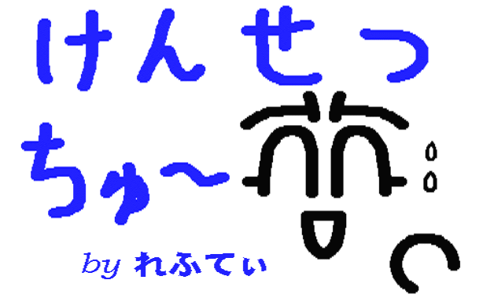
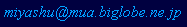

|
The contents of this site are written in Japanese only.
Welcome to Lefty Serve
(^^;)
!
Since 1995.12.12
Last Update 2026.10.24  Thank you for your comming! |
|
|
Contents
|
Top Page
全部テキストベースなので、シンプルです。 Webデザイナーに怒られそう(^^;)。 タイトル画は大学のときから使っていた物なのでご容赦・・・ランダムで生成AIの画像も表示してみます。 |
|
このページはリンク可です。
Lefty Serve (^^;) ! に関するご意見、ご感想は下記アドレスにお願いします。  |
|